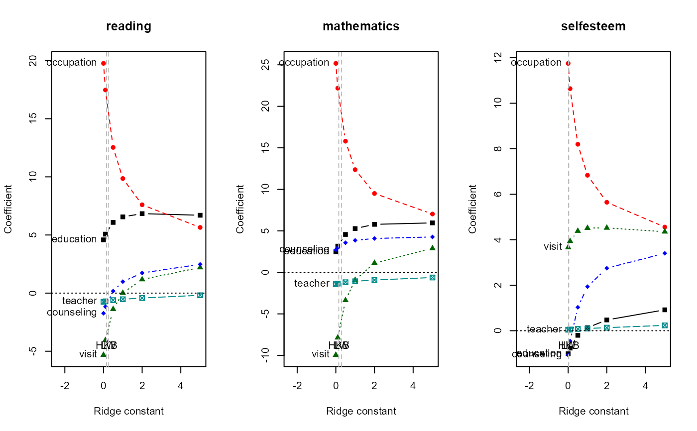
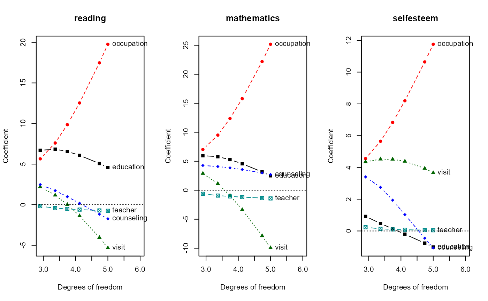
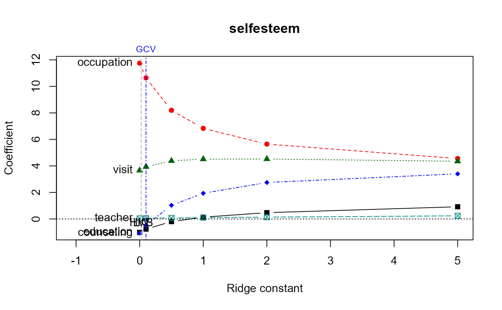
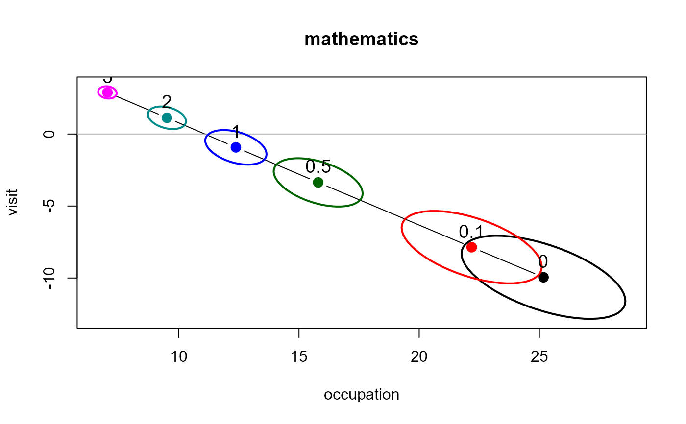
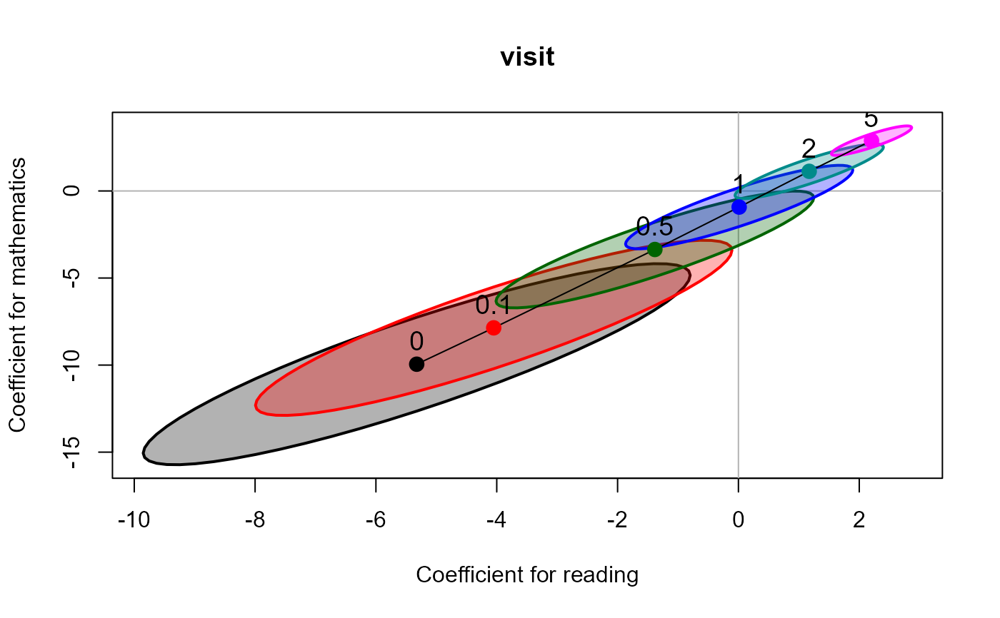
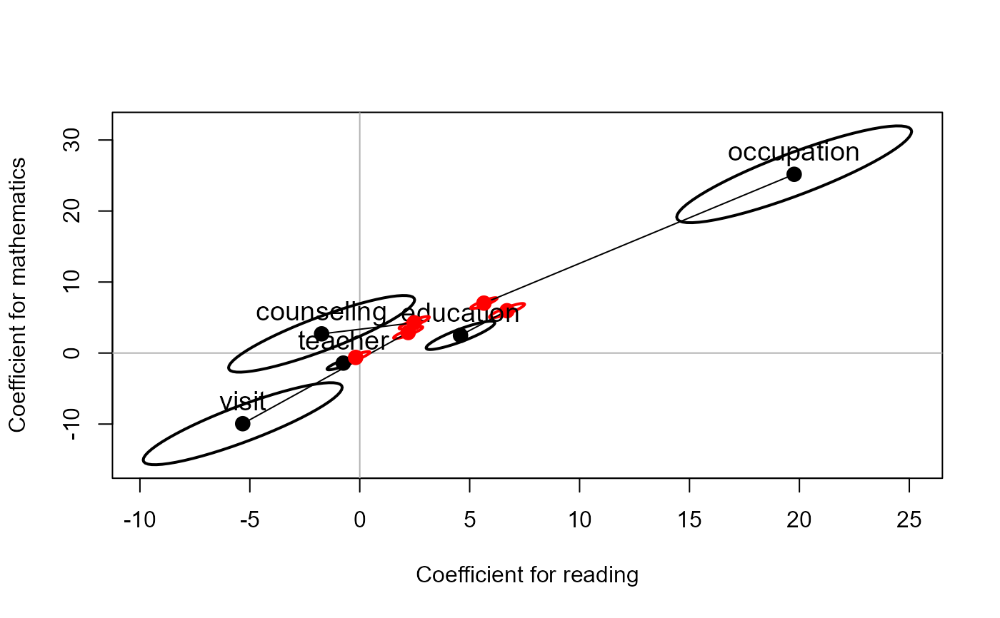
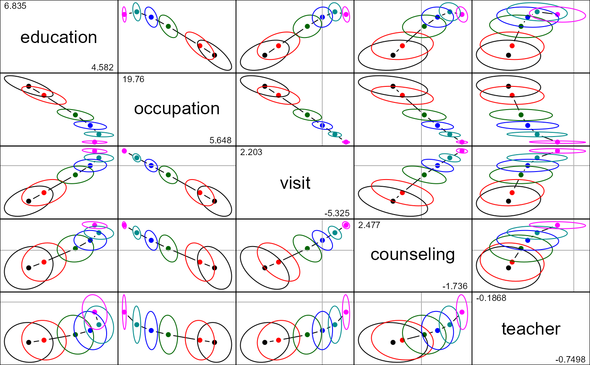

Experimental. Multivariate ridge regression (class "mlmridge") is new in this
version; its functions, arguments and results may change in future releases.
These methods apply the plots and summaries for univariate ridge regression to one response
of a multivariate ridge regression (class "mlmridge"). Each extracts the results for that
response with as.ridge() and calls the corresponding method for "ridge" objects:
traceplot(): univariate ridge trace plots (traceplot()), by default for all responses, one panel eachplot(): bivariate ridge trace plot of coefficients with covariance ellipses (plot.ridge()); withpredictor =, coefficient ellipses for one or more predictors in the space of two responses (see Details)pairs(): scatterplot matrix of bivariate ridge trace plots (pairs.ridge())plot3d(): 3D ridge trace plot (plot3d.ridge())biplot(): ridge trace plot with variable vectors (biplot.ridge())pca(): transformation to PCA/SVD space (pca.ridge()), returning a"pcaridge"objectprecision(): measures of precision and shrinkage (precision())vif(): variance inflation factors (vif.ridge())
Because all responses share the same ridge constants and predictors, the shrinkage factors, effective degrees of freedom, PCA/SVD of the predictors and the variance inflation factors are the same for every response; the coefficients, their covariance matrices (scaled by each response's residual variance) and the HKB, LW and GCV criteria differ.
Usage
# S3 method for class 'mlmridge'
traceplot(x, response = NULL, main, layout = TRUE, GCV = TRUE, ...)
# S3 method for class 'mlmridge'
plot(x, response = 1, predictor = NULL, responses = 1:2, main, ...)
# S3 method for class 'mlmridge'
pairs(x, response = 1, ...)
# S3 method for class 'mlmridge'
plot3d(x, response = 1, ...)
# S3 method for class 'mlmridge'
biplot(x, response = 1, main, ...)
# S3 method for class 'mlmridge'
pca(x, response = 1, ...)
# S3 method for class 'mlmridge'
precision(
object,
det.fun = c("log", "root"),
normalize = TRUE,
response = 1,
...
)
# S3 method for class 'mlmridge'
vif(mod, response = 1, ...)Arguments
- x, object, mod
An object of class
"mlmridge"- response
The response to use: a name, or a number in
1:q. If not given, the first response is used, with a message. Fortraceplot(),responsecan name several responses, and the default (NULL) plots all of them, one panel per response.- main
Title for the plot. The default is the name of the response. For
traceplot()with several responses, recycled over the panels.- layout
For
traceplot()with several responses: ifTRUE(the default), set up a multi-panel layout with one panel per response, side by side where possible, and restore the previous layout afterwards. Uselayout = FALSEto draw into a layout you have set up yourself, e.g., withpar(mfrow = ).- GCV
For
traceplot(): ifTRUE(the default), mark the ridge constant chosen by GCV pooled over responses (x$kGCV.pooled) with a vertical line labeled "GCV" above each panel, in addition to the HKB and LW lines for each response (labeled at the bottom). As for those, this is drawn only when plotting againstlambda, notdf.- ...
Other arguments, passed to the method for
"ridge"objects.- predictor
For
plot(): if given, plot coefficient ellipses across responses for this predictor, or several predictors (names or numbers), instead of the within-response plot; see Details. Further arguments to control the plot (radius,which.lambda,labels,col,fill,fill.alpha,lwd,lty,center.pch,center.cex,ref,ref.col,xlim,ylim,xlab,ylab) have the same meaning as inplot.ridge(). By default, the centers are labeled with the values of \(\lambda\) for one predictor, and with the predictor names for several.- responses
For
plot()withpredictor: the two responses (names or numbers) giving the horizontal and vertical axes. Default: the first two.- det.fun, normalize
See
precision().
Details
Two kinds of plot from plot(). plot() for an "mlmridge" object draws one of two
different displays, depending on whether predictor is given:
Within one response (the default,
response =): as for a univariate ridge regression (plot.ridge()), the axes are two predictors, and each ellipse shows the joint variability of their coefficients for that response, at one value of \(\lambda\).Across responses (
predictor =): the axes are two responses (responses =), and each ellipse shows the joint variability of one predictor's coefficients for those two responses, at one value of \(\lambda\). The path of the centers traces how the predictor's effects on both responses change together as \(\lambda\) increases. With several predictors, each has its own path, labeled with its name.
For predictor \(j\), the coefficients for all responses (row \(j\) of \(\mathbf{B}(\lambda)\))
have covariance matrix \([\mathbf{V}_\lambda]_{jj} \, \boldsymbol{\Sigma}\), where
\(\boldsymbol{\Sigma}\) is the residual covariance matrix of the responses (x$Sigma) and
\(\mathbf{V}_\lambda\) depends only on the predictors (x$cov). So in the across-responses
plot, all the ellipses have the same shape and orientation, that of the residual
covariance of the two responses: only their centers and sizes change with \(\lambda\) and
between predictors.
The across-responses display is the ridge analogue of heplots::coefplot() for a
multivariate linear model, which draws confidence ellipses for the coefficients of each
predictor in the space of two responses. There are two differences in meaning:
coefplot()shows each predictor once, for the OLS fit; here each predictor is traced over the values of \(\lambda\).coefplot()scales its ellipses as confidence regions (bylevel, using an \(F\) or \(\chi^2\) quantile), so whether an ellipse covers the origin is a test of the coefficients. Here, as inplot.ridge(), the ellipses are scaled byradius(1 = standard "unit" ellipse) and describe the sampling variability around a biased estimate; they are not confidence regions for the true coefficients, and covering the origin is not a test.
Examples
if (requireNamespace("heplots", quietly = TRUE)) {
data(schooldata, package = "heplots")
lambda <- c(0, 0.1, 0.5, 1, 2, 5)
sridge <- ridge(cbind(reading, mathematics, selfesteem) ~
education + occupation + visit + counseling + teacher,
data = schooldata, lambda = lambda)
# all responses, one panel each
traceplot(sridge)
traceplot(sridge, X = "df")
# one response
traceplot(sridge, response = "selfesteem")
# bivariate ridge trace plot for two predictors
plot(sridge, response = "mathematics", variables = c("occupation", "visit"),
radius = 0.5)
# coefficient ellipses across two responses, for one predictor ...
plot(sridge, predictor = "visit", responses = c("reading", "mathematics"), fill = TRUE)
# ... and for all predictors, at lambda = 0 and 5
plot(sridge, predictor = 1:5, which.lambda = c(1, 6), col = c("black", "red"))
pairs(sridge, response = "reading", radius = 0.5)
vif(sridge)
precision(sridge, response = "reading")
}







#> lambda df det trace max.eig norm.beta norm.diff
#> 0.0 0.0 5.000000 4.2118508 69.971316 40.4158067 1.0000000 0.000000
#> 0.1 0.1 4.737808 3.6510466 53.346286 29.3464212 0.8874745 1.219479
#> 0.5 0.5 4.122249 1.9486854 24.341317 11.5860671 0.6654225 3.839906
#> 1.0 1.0 3.742760 0.4715784 12.977384 5.7804816 0.5647148 5.252415
#> 2.0 2.0 3.365902 -1.5352807 6.107705 2.4299610 0.4958510 6.439566
#> 5.0 5.0 2.902188 -4.9581716 2.337693 0.7917433 0.4449482 7.461847